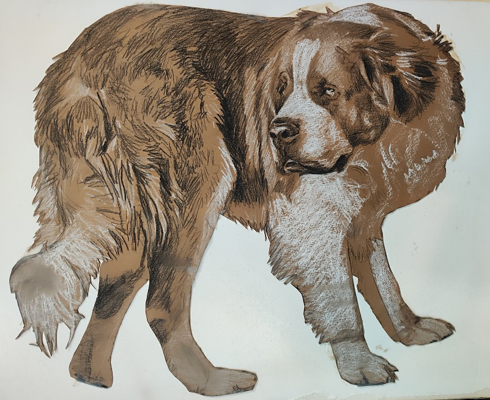
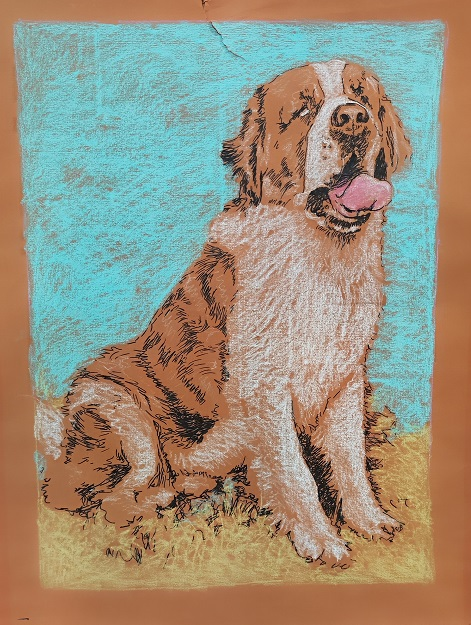

Circus Drawing

Mindy 1

Mindy 2
Paintings & Works on Paper
This section documents paintings and works on paper currently attributed to 1980–1984. Exact years are given on individual records only when supported by available documentation.
Circus Drawing

Mindy 1

Mindy 2